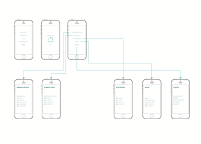

Mobicity is part of my dissertation that I made at the end of the cycle of study at the University of Palermo. It is a cross-platform UX/UI project designed for big interactive displays allocated in smart bus stops (this ones also part of the dissertation) and for mobile screens as well. The project includes a rich corporate identity system and it is ready to be developed.
The main purpose of a corporate identity is to make visually communicable something that is not perceptible. All the elements aim to take part of a well-rounded identity, being strongly linked to the concept of path and connection.
The color choice is related to key values like freshness, technology and innovation.
DicSans is a square sans serif typeface that looks good on screen and in print. It has been chosen for its longevity and recognizability.
DicSans — Thin DicSans — 300wt DicSans — 500wt DicSans — 1000wtThe logo has been designed for the mobile interface, it may not be essetial for the rest of the service. However I've chosen to design a logotype that coordinates the other elements and reveals a graphic sign that refers to the concept of connection and path.
I took care of the User Experience and the User Interface and I tested the product with prototyping tools. The project hasn't been developed because it wasn't part of the plan. However the University is dealing with the administration of the city to eventually move forward the project.